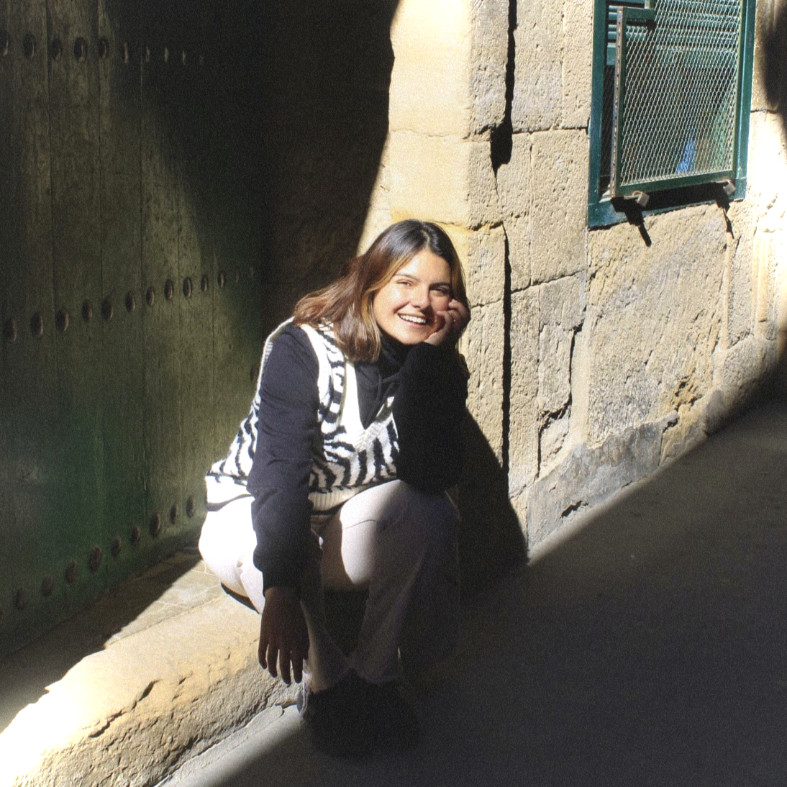

Valentina Flores Castro
Hola! Soy Valentina, estudiante de 5to año de Diseño.
Las materialidades y los procesos de fabricación son lo que más me apasiona del diseño.
Dentro de mi experiencia he desarrollado proyectos desde su conceptualización, modelado 3D, fabricación y gestión.
-
Universidad Diego Portales
2020-2024
Diseño Industrial -
Universidad del País Vasco
2022/1
Intercambio Académico (Creación y Diseño) -
Ayudante
2023
Taller de Introducción al Diseño, Taller de Diseño Industrial I -
Práctica Profesional
2023
Proyecto de Investigación "Solución Material a Residuos Textiles" / Demodé, MODUS Observatorio de Moda UDP